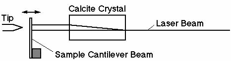
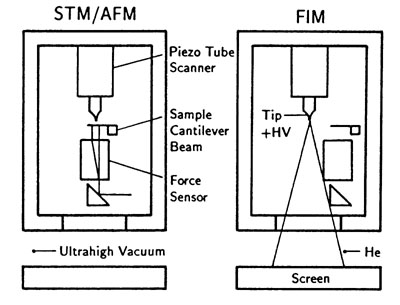
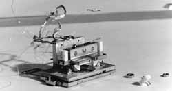
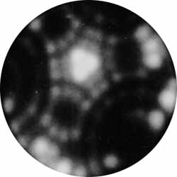
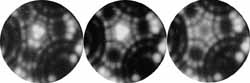
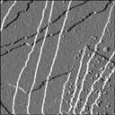

The aim of this project is to investigate the interaction between a tip and a sample which are characterized on the atomic scale. In scanning tunneling microscopy (STM) and related methods, it is usually not vital to know the atomic structure of the foremost atoms of the tip. In measurements, however, where forces are measured close to the surface (say where wavefunctions start to overlap) or when contact is made, the exact atomic arrangment of the foremost tip atoms becomes important for an accurate interpretation of the measurements. Conducting such experiments with an atomically defined tip would allow comparison with theoretical calculations for the first time without qualifications.
The project was started in 1991 by Urs Dürig and Alain Stalder (then a predoc) at the IBM Research Laboratory in Switzerland. The basic idea was to build a machine that would allow to prepare tips with atomic precision using methods from field ion microscopy (FIM). Previously, it had been demonstrated by H.-W. Fink [1] that [111]-oriented W tips can be prepared to form pyramids that end with only one atom at the apex.
The machine we built was essentially defined by the experiments we wanted to perform with it.
In order to obtain clean surfaces, the instrument must be in ultra-high vacuum (pressure below 1e-10 mbar). Furthermore the instrument has to be cooled to cryogenic temperatures in order to limit surface diffusion on tip and sample and also to obtain FIM images with good contrast and resolution. We have chosen to cool with liquid nitrogen, which should be sufficient for many experiments. It is important to measure the interaction force between tip and sample independently of the tunneling current (which serves as a measure for the tip-sample distance). In addition the force sensor must be able to detect forces of the order of nN with cantilever beams (CBs) that have spring constants of the order of 100 N/m. Hence CB deflections of the order of 0.01 nm have to be detected.
We have chosen to use a differential interferometer based on the Nomarsky principle [2]. In short a calcite crystal is used to split a laser beam into two mutually orthogonal polarization states (see figure below). These two beams are reflected on different spots on the CB and merge back into one beam again. A CB deflection causes a phase difference between the two that can be detected in a straightforward way.
An important point in the design of the instrument was that the transition from STM/AFM to FIM operation had to be quick. In particular we wanted to avoid transferring the tip away from the STM for doing FIM because this increases the chance of the tip becoming contaminated. The basic geometrical setup is shown in the figure below.
For a detailed description of the instrument (and tip preparation) see [3]. A description of another important element of the instrument, namely a combined liquid nitrogen cooling and damping stage can also be found in [4]. In order to get an idea of how the instrument looks like, click the image below for some scanned photos and drawings.
Tips are first electrochemically etched from [111]-oriented W wire and then transferred into the vacuum chamber, where they are cleaned by heating and self-sputtering.
Imaging by FIM constists of applying a high positive voltage to the tip (typically a few kV) while the vacuum chamber is filled with about 1e-5 mbar of He gas. Electrons in the He gas tunnel to the tip; the created He ions are repelled from the tip and can be detected on a screen.
When the imaging voltage is increased, atoms on the tip start to "field evaporate". This process can be used to evaporate several layers of the tip, a few atoms at a time. In general, field evaporation tends to make the tips rounder. By carefully heating the tip, however, the three (110) planes can be made to grow, thus forming a sharper tip.
Click the FIM image below to see how it can be used to infer the structure of the foremost atomic layers of the tip.
Click on the image below to look at a sequence of 16 subsequent evaporation steps.
Note that the tip shown here was in vacuum during about a month. During that time it had been prepared repeatedly to the same atomic arrangment of the foremost atoms.
In July 1995 the machine had been built (with technical help by Meinrad Tschudy who built most things inside the vacuum chamber except the actual STM/AFM/FIM) and single crystal W tips had been prepared by FIM. Furthermore the STM/AFM worked at low temperature in ultra-high vacuum (see STM image below), however not with the single crystal tips that had been prepared using the FIM. At the end of 1995 the machine was donated to the group of Peter Grütter at McGill University. Now Graham Cross and André Schirmeisen (both graduate students), Alain Stalder (postdoc) and Peter Grütter are pursuing the project in collaboration with Urs ürig of the IBM Research Laboratory in Switzerland.
The STM image above shows a [111]-oriented Pt surface at 140 K recorded with an Ir tip. Several atomic steps are visible in the scan area of 100 nm by 100 nm.
As a first experiment we intend to measure the adhesion force between a [111]-oriented W tip with known atomic structure of its foremost layers and a single crystal sample, probably a thin metal film evaporated onto a glass CB. Another simple experiment would be to make and break a metallic contact with this tip-sample system while measuring both current and interaction force. After breaking the contact, both tip and sample could be investigated for modifications. It is worthwhile to mention that macroscopic phenomena like adhesion, friction and wear (which are of great technological importance) are based to a large degree on contacts of nanometer size dimensions (so called "asperities").
A vast field of investigation is the manipulation of atoms or molecules on the sample surface. Manipulation has already been successfully demonstrated in several systems. Forces are usually not measured and certain aspects of manipulation are up to now more on the stage of a set of recipes than of theories. As the apparatus we built could allow us to manipulate atoms or molecules with an atomically defined tip and would also allow us to monitor the forces that occur while manipulating, we would have a unique tool to improve the understanding of the nanoscale world. A bit more far fetched, one could then start to search for candidate systems for use in nanometer-sized devices, i.e. systems having certain properties that can be described by rather simple theories, a property that is often a prerequisite for technological usefulness.
[1] H.-W. Fink, IBM J. Res. Develop. 30, 460
(1986)
[2] C. Schönenberger and S. F. Alvarado, Rev. Sci. Instrum.
60, 3131 (1989)
[3] A. Stalder, Dissertation #1108, University of Fribourg, Switzerland
(1996) [in english]
[4] A. Stalder and U. Dürig, Rev. Sci. Instrum.
64, 3644 (1993)